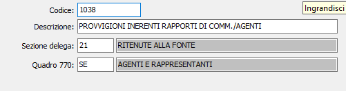

Tributi ministeriali
La tabella può contenere di fatto tutti i tributi erariali che possono essere pagati tramite l’F24, fra i quali sono per noi rilevanti quelli relativi alla gestione dei compensi a terzi (professionisti, collaboratori e rappresentanti) ed i tributi relativi all’Iva. Per ciascun codice tributo viene definito la correlativa sezione di delega F24. Gli stessi codici tributo, acquisiti all’interno dei movimenti dei compensi a terzi, consentono le totalizzazioni ai fini del mod. 770 e delle certificazioni I vari codici tributo inoltre determinano la totalizzazione dei movimenti compensi ai fini IRPEF per ottenere l’importo mensile da versare, tramite F24, all’erario.
Prima di illustrare la tabella è tuttavia opportuno illustrare la struttura dei codici tributo relativamente alla delega F24.
|
SEZIONE F24 |
N° sez |
GR. sez |
TIPO RITENUTE |
NOTE |
|
SEZIONE 2 SE |
2 |
1 |
RITENUTE ALLA FONTE |
|
|
|
|
2 |
IVA PERIODICA E A SALDO |
|
|
|
|
3 |
IMPOSTE DIRETTE |
|
|
|
|
4 |
ALTRI TRIBUTI E INTERESSI |
|
|
SEZIONE 3 SI |
3 |
1 |
CONTRIBUTI INPS |
Vedi tabella seg. |
|
SEZIONE 4 SR |
4 |
1 |
REGIONI |
|
|
|
4 |
2 |
ENTI LOCALI |
|
|
SEZIONE 5 SA |
5 |
1 |
INAIL |
|
|
|
|
2 |
SEZIONE ALTRI ENTI |
|
|
SEZIONE CR |
6 |
1 |
GESTIONE CREDITI |
|
|
|
|
2 |
CREDITI UTILIZZATI IN DICHIARAZIONE |
|
La struttura dell’F24 ci permette di capire che tutti i codici tributo relativi alle ritenute alla fonte che interessano al gestione compensi a terzi appartengono alla sezione 2 gruppo 1, così come i contributi INPS per i lavoratori autonomi appartengono alla sezione 3 gruppo 1 e i premi INAIL appartengono alla sezione 5 gruppo 1.

CODICE TRIBUTO: codice alfanumerico di 4 caratteri, corrispondente alla codifica ministeriale, che definisce il tributo in esame. Sul campo sono attive le funzioni di vista sulla tabella stessa.
DESCRIZIONE TRIBUTO: campo alfanumerico di 50 caratteri per descrivere la denominazione ministeriale.
SEZIONE DELEGA: campo numerico di 2 caratteri per definire la sezione della Delega Unificata in cui deve essere stampato il tributo in esame. Valori ammessi:
21 SEZIONE 2 SE RITENUTE ALLA FONTE
22 SEZIONE 2 SE IVA PERIODICA E A SALDO
23 SEZIONE 2 SE IMPOSTE DIRETTE
24 SEZIONE 2 SE ALTRI TRIBUTI E INTERESSI
31 SEZIONE 3 SI CONTRIBUTI INPS
41 SEZIONE 4 SR REGIONI
42 SEZIONE 4 SR ENTI LOCALI
51 SEZIONE 5 SA INAIL
52 SEZIONE 5 SA SEZIONE ALTRI ENTI
61 SEZIONE CR GESTIONE CREDITI
62 SEZIONE CR CREDITI UTILIZZATI IN DICHIARAZIONE
QUADRO 770: flag numerico di 1 caratteri per indicare l’eventuale quadro del MOD. 770 in cui deve essere riportato il compenso in esame. L’informazione deve essere inserita solo per i tributi rilevanti ai fini del MOD. 770. Valori ammessi:
SC = Ritenute a professionisti e lavoratori autonomi
SE = Ritenute a rappresentanti, agenti e simili
ALCUNI ESEMPI DI CODICI TRIBUTO:
1038 Provvig. inerenti rapp. di commiss. Agen sezione 21 quadro SE
1040 Compensi per esercizio arti e profess. sezione 21 quadro SC
1042 Indenn. cessazione rapporti cod. 1041 sezione 21 quadro
1045 Compen. lavoro auto. sogg. resid. Estero sezione 21 quadro SC